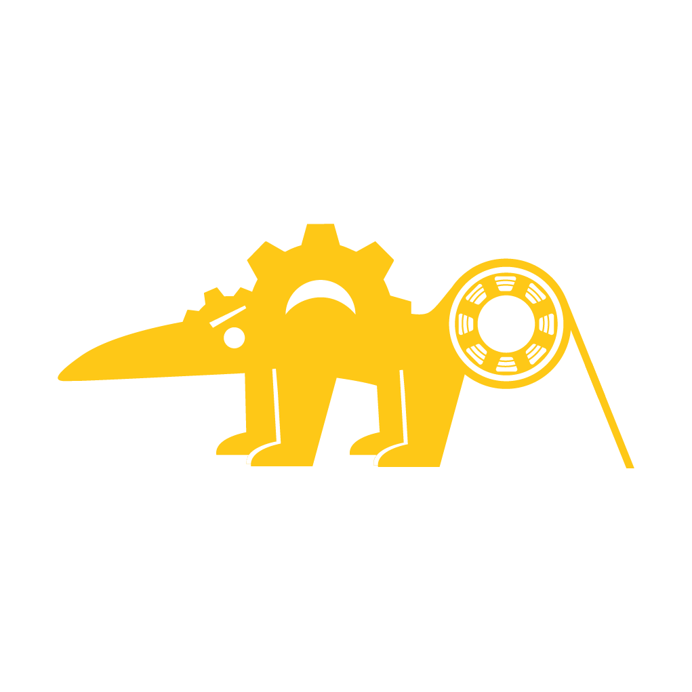
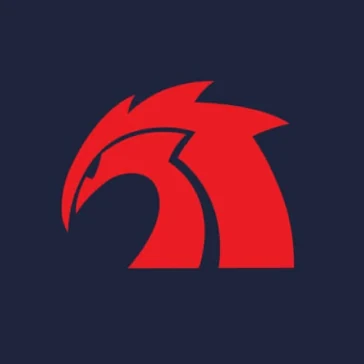
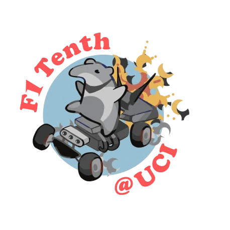
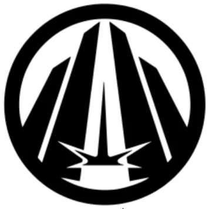
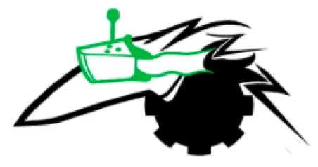

More than a makerspace.
A community of builders.
ZIMS is part of the broader ZotBotics community at UC Irvine, connecting students across different applications of robotics.

ZIMS
ZotBotics Introductory Makerspace (ZIMS) provides accessible project-based learning and access to advanced tools and machinery for students of all experience levels.

ACE
Anteater Combat Engineering (ACE) is the undergraduate combat robotics team at UC Irvine, dedicated to designing and competing in competitive robotics from 1lb to 30lb weight classes.

F1Tenth
Accelerating autonomous vehicle research through competitive high-speed racing at the 1:10 scale.

Legacy Robotics
Legacy is developing an advanced rover for the University Rover Challenge, focusing on robotics, autonomous systems, precision engineering, and planetary exploration.

UAV
Focused on hands-on drone building and flying, Unmanned Aerial Vehicles (UAV) wants to cultivate a group of drone enthusiasts.